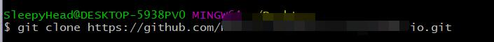
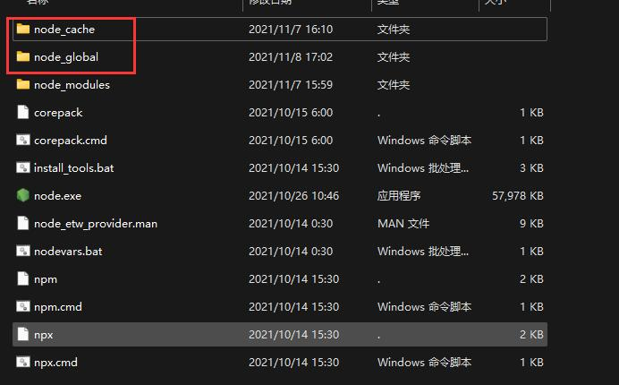
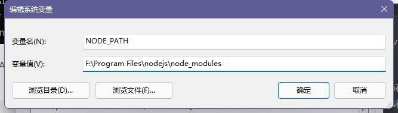

搭建博客-基于hexo-github
自己搭建一个博客，可以锻炼自己的能力， 也可以去记录一下自己的心得。本文是将资源托管于github仓库，基于hexo搭建的，下面是我自己记录的搭建过程。
- git的安装和使用
- nodejs的安装和使用
- hexo的安装和使用
我使用的软件及版本如下：
1 | git: 2.33.1.windows.1 |
git的安装和使用
注册账号
如果进不去github的官网，则在本地hosts的文件(C:\Windows\System32\drivers\etc)添加:
1 | //这个ip可能会变化 |
- host的文件修改需要权限
- IPAddress.com网站,查询上面三个地址ip
安装git。
下载网址：https://git-scm.com/
路径自定义，其他的默认安装即可。
这个注意：后面会用到。

然后在该文件下右键打开Cit bash输入：git clone 项目网址

此时已经将本地文件夹和远程仓库绑定了。
安装node.js
测试安装
从node.js官方下载安装，在cmd中检查是否安装成功
1 | node -v |
配置路径
因为在执行例如npm install webpack -g等命令全局安装的时候，默认会将模块安装在C:\Users\用户名\AppData\Roaming路径下的npm和npm_cache中，不方便管理且占用C盘空间，所以这里配置自定义的全局模块安装目录，在node.js安装目录下新建两个文件夹 node_global和node_cache，然后在cmd命令下执行如下两个命令：

1 | npm config set prefix "F:\Program Files\nodejs\node_global" |
配置环境变量
在系统变量中新建一个变量名为 “NODE_PATH”
编辑用户变量里的Path，将相应npm的路径改为如图所示：

测试npm模块
在cmd中执行
1 | npm install webpack -g |
执行 npm webpack -v，查看webpack是否安装成功，
Hexo安装和使用
下载hexo
点开MyBlog 文件夹，鼠标右键打开 Git Bush Here，输入：
1 | npm install webpack -g |
初始化hexo
1 | hexo init |
本地静态部署
1 | hexo g #生成网站静态文件 |
在本地查看：
1 | hexo s |
此时框架已经基本在本地布置完成:可以在 http://localhost:4000 查看新部署的网页，ctrl+c停止运行
将Hexo部署到GitHub
用记事本打开当前文件夹下的 _config.yml 文件
并在底部写上如下代码，需要把原来的deploy删除，另外冒号后面要有空格
安装Git部署插件
单平台部署可以不安装
1 | npm install hexo-deployer-git --save |
提交到github
1 | hexo clean #清除缓存文件和已生成的静态文件 |
此时你输入你项目的网址’http://用户名.github.io, 就可以访问自己的博客了。
hexo d 是上传到github上，如果你频繁的修改文件，或者只想暂时查看一下布局，可以选择：
1 | hexo clean&&hexo g&&hexo s |
通过http://localhost:4000 在本地查看
当你自己一步步搭建完成后，你会发现博客具有以下特点：
- 这是一个静态网页。
- hexo将你的项目，变成静态网页，
- github仓库托管网页，可以实现联网和资源的放置。
另外github托管的网页，不会被爬虫检索，即在百度上搜索不到